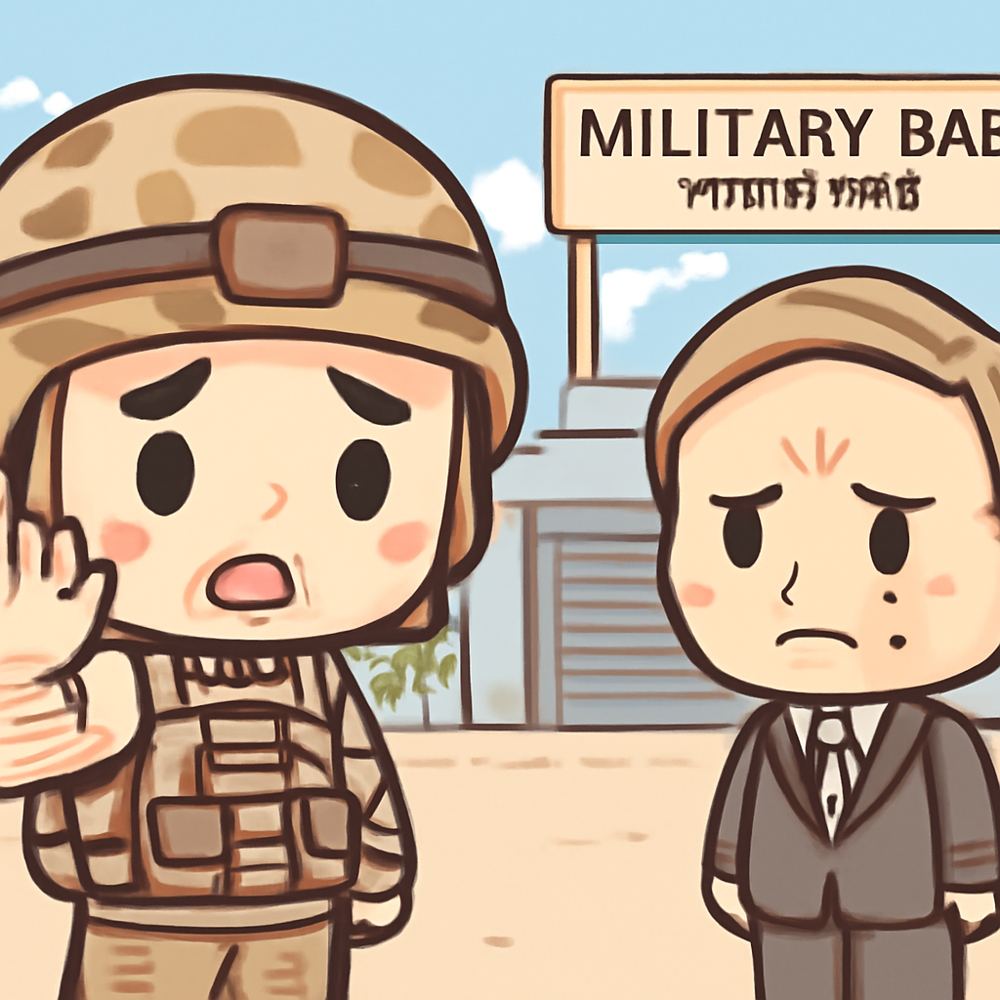
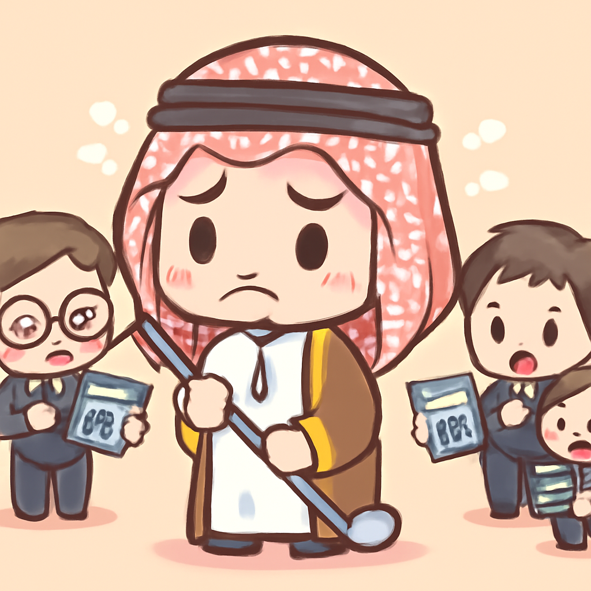
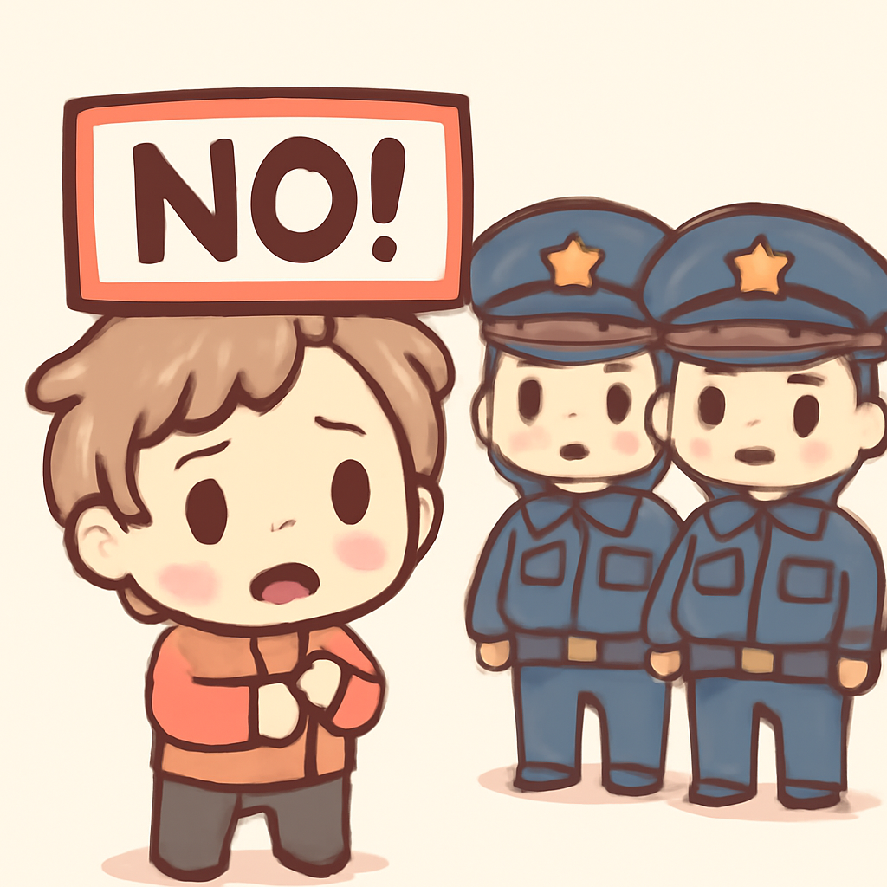

其一 · 德國 · 美國計畫減少駐軍人數
美國決定將駐德國部隊減少5000人

在德國，因為特朗普和德國總理梅茲之間的爭執，美國決定減少駐德軍人數5000人。這個動作不僅影響了德國的軍事佈局，還可能影響美國在歐洲的戰略，搞不好還會引發其他國家的反應。看來，特朗普和梅茲的關係就像一杯過期的牛奶，隨時都有變質的危險。
🔗 原始新聞 ↗
2026-05-02 · 以古觀今，以笑抗愁
美國決定將駐德國部隊減少5000人

在德國，因為特朗普和德國總理梅茲之間的爭執，美國決定減少駐德軍人數5000人。這個動作不僅影響了德國的軍事佈局，還可能影響美國在歐洲的戰略，搞不好還會引發其他國家的反應。看來，特朗普和梅茲的關係就像一杯過期的牛奶，隨時都有變質的危險。
🔗 原始新聞 ↗
沙烏地阿拉伯減少高額支出，影響深遠

在沙烏地阿拉伯，隨著該國對高調高爾夫計畫的撤回，顯示出其經濟的壓力。這不僅影響了該國的財政狀況，也讓世界關注沙國未來的經濟走向。看來，這場高球賽不僅是比賽，還是財政的角力。
🔗 原始新聞 ↗
以色列首次將鐵穹系統提供給阿聯酋
以色列向阿聯酋提供了其著名的鐵穹防禦系統，這是首次將該系統轉移到阿拉伯國家。隨著伊朗的報復性攻擊，阿聯酋的安全形勢變得更加緊迫。這不僅是軍事合作，還可能改變中東的權力格局，讓人不得不關注未來的發展。
🔗 原始新聞 ↗
美國法院決定限制墮胎藥物的郵購
在美國，法院裁定限制使用在藥物墮胎中最常見的藥物米非司酮的郵購。這項決定影響了許多女性的選擇和健康權利，也反映出當前美國在墮胎議題上的分歧。這似乎又是一場權力的博弈，女性的身體權益再度被推上了風口浪尖。
🔗 原始新聞 ↗
土耳其五一勞動節，警方逮捕超過500人

在土耳其，五一勞動節的抗議活動中，警方逮捕了超過500名參與者。這顯示出政府對抗議活動的強硬立場，也引發了對言論自由和集會權的擔憂。看來，抗議者的聲音在這裡就像是海裡的泡泡，瞬間消失無蹤。
🔗 原始新聞 ↗